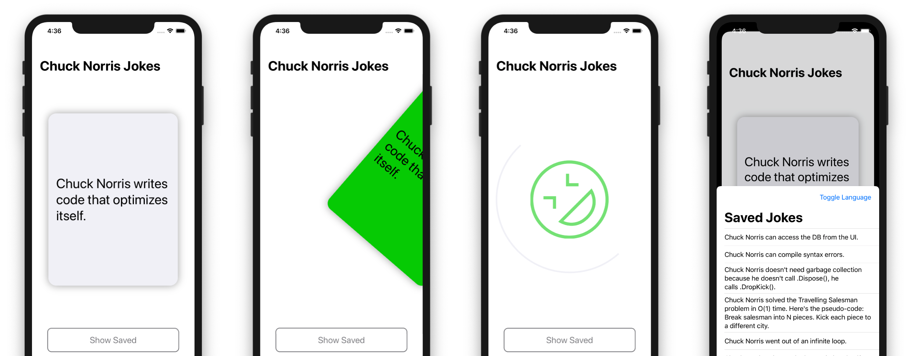
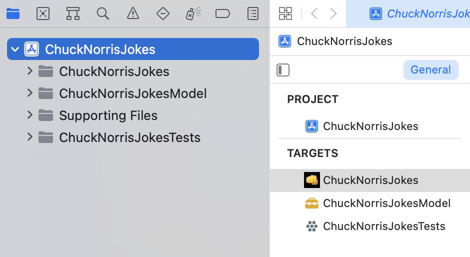
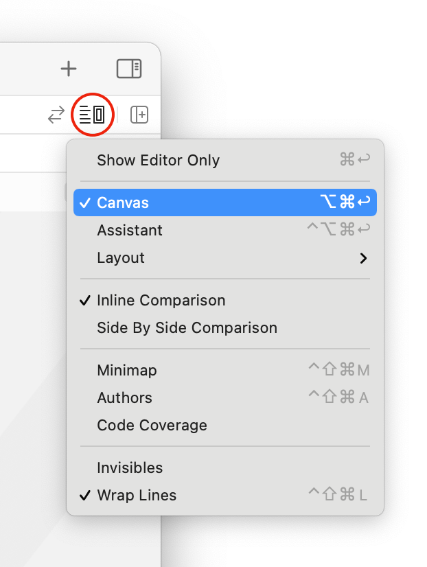
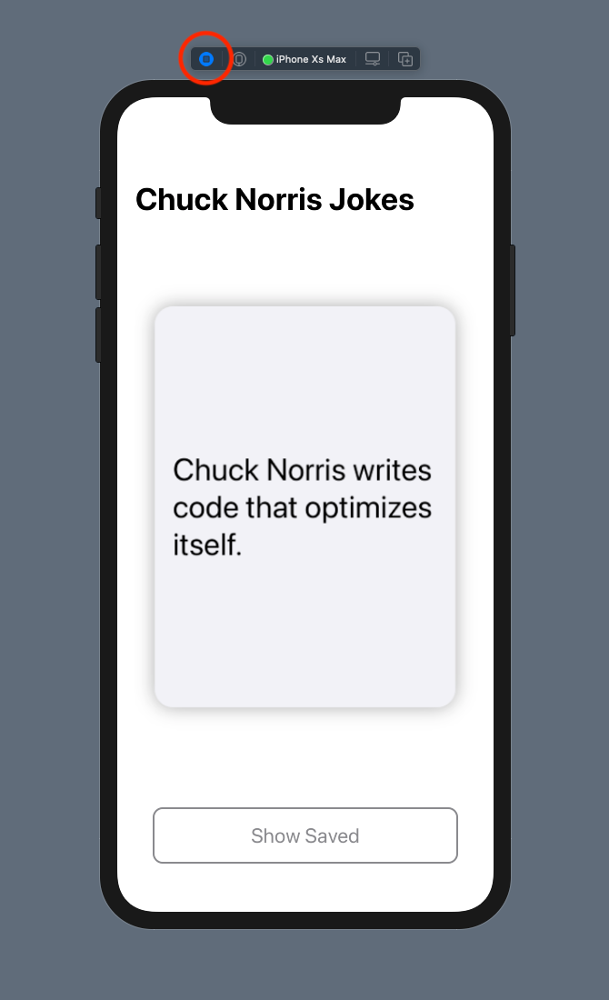
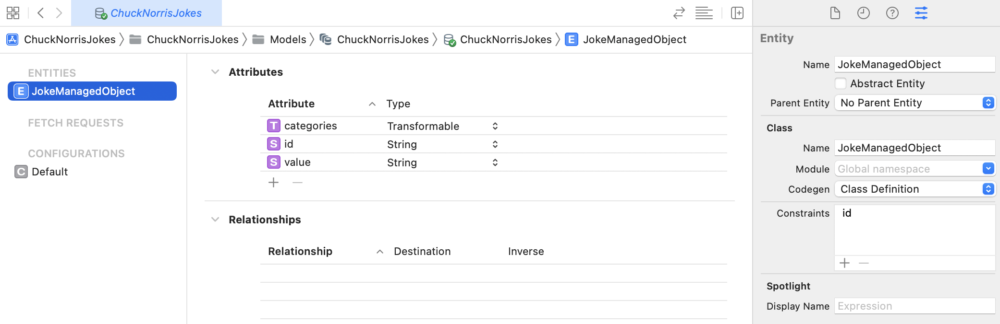

第20章：实践：构建一个完整的应用程序¶
通过引入组合并将其集成到他们的框架中，苹果清楚地表明：在Swift中进行声明性和被动式编程是为他们的平台开发明天最伟大应用程序的绝佳方式。
在最后三个部分中，您获得了一些很棒的组合技能。在最后一章中，您将利用所学到的一切来完成开发一个应用程序，该应用程序允许您获取Chuck Norris的笑话。但是等等，还有更多！您还将了解如何将Core Data与Combine一起使用来持久化和检索您最喜欢的笑话。

入门指南¶
打开本章的入门项目。在开始向项目添加代码之前，请花点时间查看启动项目中已经实现的内容。
Note
与本书中的所有项目一样，您也将在本章中与SwiftUI合作。如果您想了解更多信息，请查看raywenderlich.com库中的SwiftUI教程。
在项目导航器顶部选择`ChuckNorrisJokes 项目：

该项目有三个目标：
ChuckNorrisJokes：主要目标，其中包含您的所有UI代码。ChuckNorrisJokesModel：您将在这里定义您的模型和服务。将模型分离到自己的目标中是管理主要目标访问的好方法，同时也允许测试目标访问具有相对严格的internal访问级别的方法。ChuckNorrisJokesTests：您将在此目标中编写一些单元测试。
在主要目标ChuckNorrisJokes中，打开ChuckNorrisJokes/Views/JokeView.swift。这是该应用程序的主要视图。此视图有两个预览：处于浅色模式的iPhone 11 Pro Max和深色模式的iPhone SE（第2代）。
您可以通过单击Xcode右上角的调整编辑器选项按钮并选中画布来查看预览。

如果Xcode无法呈现一些正在进行的代码，它将停止更新画布。您可能需要定期单击顶部跳转栏中的恢复按钮才能重新启动预览。
单击每个预览的实时预览按钮，以获得类似于在模拟器中运行应用程序的交互式运行版本。

目前，您可以轻扫笑话卡视图，而不会太多其他内容。不过，不会太久！
Note
如果预览渲染失败，您还可以在模拟器中构建和运行应用程序来查看您的进度。
在开始对这个应用程序的开发进行最后润色之前，您应该设定一些目标。
设定目标¶
您收到了几个像这样的用户故事：作为用户，我想：
- 当我向左或向右滑动笑话卡时，请查看指示器，以表明我不喜欢或喜欢笑话。
- 保存喜欢的笑话，稍后再阅读。
- 当我向左或向右滑动时，看到笑话卡的背景颜色会变成红色或绿色。
- 在我不喜欢或喜欢现在的笑话后，开始一个新笑话。
- 获取新笑话时，请看到一个指示器。
- 获取笑话时，如果出现问题，请显示指示。
- 调出保存的笑话列表。
- 删除已保存的笑话。
如果你选择接受，这些目标是你的使命。有人能说MissionPossible吗？！是时候开始了！
上述每个用户故事都依赖于逻辑，因此您需要实现该逻辑，然后才能将其连接到用户界面并开始检查该列表。
实施JokesViewModel¶
该应用程序将使用单一视图模型来管理驱动多个UI组件的状态，并触发获取和保存笑话。
在ChuckNorrisJokesModel目标中，打开View Models/JokesViewModel.swift。您将看到一个裸骨实现，其中包括：
- 导入组合和
SwiftUI。 DecisionState``enum。JSONDecoder实例。- 两个
AnyCancellable的集合。 - 一个空的初始化器和几个空的方法。
是时候填满所有这些空白了！
实施状态¶
SwiftUI使用多个状态来确定如何呈现视图。在创建decoder的行下方添加此代码：
@Published public var fetching = false
@Published public var joke = Joke.starter
@Published public var backgroundColor = Color("Gray")
@Published public var decisionState = DecisionState.undecided
在这里，您可以创建几个@Published属性，为每个属性合成一个发布者。您可以使用$前缀访问这些属性的发布者——例如$fetching。它们的名字和类型可以很好地说明它们的目的，但你会尽快把它们都用起来，并确切地看看如何使用它们。
在充实此视图模型的其余部分之前，您需要实现更多内容。
实施服务¶
打开Services/JokesService.swift。您将使用JokesService从chucknorris.io数据库中获取随机笑话。它还将为从获取返回的数据提供发布者。
为了能够在稍后的单元测试中模拟此服务，您需要完成定义概述发布者要求的协议。打开Protocols/JokeServiceDataPublisher.swift。Combine已经在这里为您导入，因为它在本章的大部分需要它的文件中。
将protocol定义更改为以下内容：
public protocol JokeServiceDataPublisher {
func publisher() -> AnyPublisher<Data, URLError>
}
现在，打开Services/JokesService.swift，并同样实现其对JokeServiceDataPublisher的一致性：
extension JokesService: JokeServiceDataPublisher {
public func publisher() -> AnyPublisher<Data, URLError> {
URLSession.shared
.dataTaskPublisher(for: url)
.map(\.data)
.eraseToAnyPublisher()
}
}
如果您此时构建项目的测试目标，您将收到编译器错误。此错误指向测试目标中模拟服务的存根实现。要压制此错误，请openChuckNorrisJokesTests/Services/MockJokesService.swift并将此方法添加到MockJokesService：
func publisher() -> AnyPublisher<Data, URLError> {
// 1
let publisher = CurrentValueSubject<Data, URLError>(data)
// 2
DispatchQueue.global().asyncAfter(deadline: .now() + 0.1) {
if let error = error {
publisher.send(completion: .failure(error))
} else {
publisher.send(data)
}
}
// 3
return publisher.eraseToAnyPublisher()
}
使用此代码，您：
- 创建一个模拟发布者，该发布者会发出
Data值，并可能使用URLError失败，URLError使用模拟服务data属性初始化。 - 如果提供了
error或通过主题发送data值。 - 返回类型擦除的发布者。
您可以使用DispatchQueue.asyncAfter(deadline:)来模拟获取数据的轻微延迟，这是本章后面的单元测试所需的。
完成实施JokesViewModel¶
完成样板后，返回View Models/JokesViewModel.swift，并在@Published之后添加以下属性：
private let jokesService: JokeServiceDataPublisher
视图模型使用默认实现，而单元测试可以使用此服务的模拟版本。
更新初始化器以使用默认实现，并将服务设置为其各自的属性：
public init(jokesService: JokeServiceDataPublisher = JokesService()) {
self.jokesService = jokesService
}
仍在初始化器中，向$joke发布者添加订阅：
$joke
.map { _ in false }
.assign(to: &$fetching)
您将使用fetching已发布的属性来指示应用程序何时获取笑话。
获取笑话¶
说到获取，请更改fetchJoke()的实现以匹配此代码：
public func fetchJoke() {
// 1
fetching = true
// 2
jokesService.publisher()
// 3
.retry(1)
// 4
.decode(type: Joke.self, decoder: Self.decoder)
// 5
.replaceError(with: Joke.error)
// 6
.receive(on: DispatchQueue.main)
// 7
.assign(to: &$joke)
}
从顶部，你：
- 将
fetching设置为true。 - 开始订阅笑话服务发布商。
- 如果发生错误，请重试获取一次。
- 将从发布者收到的数据传递给
decode操作符。 - 将错误替换为显示错误消息的
Joke实例。 - 在主队列中接收结果。
- 将收到的笑话分配给
joke``@Published属性。
更改背景颜色¶
updateBackgroundColorForTranslation(_:)方法应根据笑话卡视图的位置（又名其翻译）更新backgroundColor。将其实施更改为以下内容，以使其发挥作用：
public func updateBackgroundColorForTranslation(_ translation: Double) {
switch translation {
case ...(-0.5):
backgroundColor = Color("Red")
case 0.5...:
backgroundColor = Color("Green")
default:
backgroundColor = Color("Gray")
}
}
在这里，您只需切换通过translation，如果高达-0.5（-50%），则返回红色，如果为0.5+（50%+），则返回绿色，如果在中间，则返回灰色。这些颜色在主要目标的Supporting Files资产目录中定义，以防您想查看它们。
您还将使用笑话卡的位置来确定用户是否喜欢这个笑话，因此请将updateDecisionStateForTranslation(_:andPredictedEndLocationX:inBounds:)的实现更改为：
public func updateDecisionStateForTranslation(
_ translation: Double,
andPredictedEndLocationX x: CGFloat,
inBounds bounds: CGRect) {
switch (translation, x) {
case (...(-0.6), ..<0):
decisionState = .disliked
case (0.6..., bounds.width...):
decisionState = .liked
default:
decisionState = .undecided
}
}
这种方法的签名似乎比实际更令人生畏。在这里，您可以切换translation和x值。如果百分比是-/+ 60%，则您认为这是用户的最终决定。否则，他们仍然犹豫不决。
如果用户悬停在决策状态区域内，您可以使用x和bounds.width值来防止决策状态更改。换句话说，如果没有足够的速度来预测超过这些值的最终位置，他们还没有做出决定——但是，如果有足够的速度，这是一个好兆头，表明他们打算完成这个决定。
为下一个笑话做准备¶
你还有一种方法要走。将reset()为：
public func reset() {
backgroundColor = Color("Gray")
}
当用户喜欢或不喜欢这个笑话时，笑话卡将被重置，以便为下一个笑话做好准备。您唯一需要手动处理的部分是将其背景颜色重置为灰色。
使视图模型可观察¶
在继续之前，您还需要在此视图模型中做一件事：使其符合ObservableObject，以便在整个应用程序中进行观察。在引擎盖下，ObservableObject将自动合成objectWillChange发布者。更重要的是，通过使您的视图模型符合此协议，您的SwiftUI视图可以订阅视图模型的@Published属性，并在这些属性发生变化时更新其正文。
这解释比实施花费的时间要多得多。将类定义更改为以下内容：
public final class JokesViewModel: ObservableObject {
您已经完成了视图模型的实现——整个操作的大脑！
Note
此时，在真实设置中，您可能会根据此视图模型编写所有测试，确保一切顺利通过，检查您的工作，并当天去吃午饭或回家。相反，您将继续使用您刚刚实现的视图模型来驱动应用程序的用户界面。您将回到挑战部分编写单元测试。
布线JokesViewModel到用户界面¶
该应用程序的主屏幕上有两个View组件：本质上是背景的JokeView和浮动的JokeCardView。两者都需要参考视图模型，以确定何时更新和显示什么。
打开 Views/JokeCardView.swift。ChuckNorrisJokesModel模块已经导入。要获取视图模型的句柄，请将此属性添加到JokeCardView定义的顶部：
@ObservedObject var viewModel: JokesViewModel
您用@ObservedObject属性包装器注释了此属性。与视图模型采用ObservableObject一起使用，您现在获得objectWillChange发布者。您现在在此文件中收到编译器错误，因为底部的预览提供程序正在等待JokeCardView初始化器中的视图模型参数。
错误应该指向您，但如果不是，请在JokeCardView_Previews中找到底部的JokeCardView()初始化器，并添加视图模型的默认初始化。生成的结构实现应该如下所示：
struct JokeCardView_Previews: PreviewProvider {
static var previews: some View {
JokeCardView(viewModel: JokesViewModel())
.previewLayout(.sizeThatFits)
}
}
您现在在JokeView中有一个编译器错误需要处理，但这也很容易解决。
打开Views/JokeView.swift，并在私有属性的顶部添加以下内容，上面showJokeView：
@ObservedObject private var viewModel = JokesViewModel()
接下来，找到jokeCardView计算属性并将JokeCardView()初始化更改为：
JokeCardView(viewModel: viewModel)
错误消失了。现在，切换回Views/JokeCardView.swift。在body实现的顶部，找到行Text(ChuckNorrisJokesModel.Joke.starter.value)并将其更改为：
Text(viewModel.joke.value)
使用此代码，您可以从使用入门笑话切换到视图模型的笑话发布者的当前值。
设置笑话卡片的背景颜色¶
现在，回到JokeView.swift。您将专注于实现现在使此屏幕正常工作所需的内容，然后稍后返回以启用演示保存的笑话。找到private var jokeCardView属性，并将其.background(Color.white)修饰符更改为：
.background(viewModel.backgroundColor)
视图模型现在决定了笑话卡视图的背景颜色。您可能还记得，视图模型根据卡片的翻译设置颜色。
表明一个笑话是喜欢还是不喜欢¶
接下来，您需要设置一个可视化指示，以显示用户是否喜欢或不喜欢一个笑话。查找HUDView的两种用途：一种显示.thumbDown图像，另一种显示.rofl图像。这些图像类型在HUDView.swift中定义，对应于使用Core Graphics绘制的图像。
更改.opacity(0)修饰符的两种用法如下：
- 对于
HUDView(imageType: .thumbDown)：
.opacity(viewModel.decisionState == .disliked ? hudOpacity : 0)
- 对于
HUDView(imageType: .rofl)：
.opacity(viewModel.decisionState == .liked ? hudOpacity : 0)
此代码允许您显示.liked和.disliked状态的正确图像，当状态为.undecided时，没有图像。
处理决策状态更改¶
现在，找到updateDecisionStateForChange(_:)并将其更改为：
private func updateDecisionStateForChange(_ change: DragGesture.Value) {
viewModel.updateDecisionStateForTranslation(
translation,
andPredictedEndLocationX: change.predictedEndLocation.x,
inBounds: bounds
)
}
此方法调用视图模型的updateDecisionStateForTranslation(_:andPredictedEndLocationX:inBounds:)方法，该方法您之前实现了该方法。它通过基于用户与笑话卡视图的交互的视图获得的值。
在此方法的下方，将updateBackgroundColor()更改为：
private func updateBackgroundColor() {
viewModel.updateBackgroundColorForTranslation(translation)
}
该方法还调用视图模型上的方法，根据用户与笑话卡视图的交互传递视图获得的翻译。
用户抬起手指时的处理方式¶
还有一个实现方法，然后您可以将应用程序用于旋转。
handle(_:)方法负责处理用户抬起手指（即修补）时的处理。如果用户在.undecided状态下进行润色，它会重置笑话视图卡的位置。否则，如果用户在确定的状态下进行润色（.liked或.disliked），它会引导视图模型重置并获取新笑话。
将handle(_:)的实现更改为以下内容：
private func handle(_ change: DragGesture.Value) {
// 1
let decisionState = viewModel.decisionState
switch decisionState {
// 2
case .undecided:
cardTranslation = .zero
self.viewModel.reset()
default:
// 3
let translation = change.translation
let offset = (decisionState == .liked ? 2 : -2) * bounds.width
cardTranslation = CGSize(
width: translation.width + offset,
height: translation.height
)
showJokeView = false
// 4
reset()
}
}
分解您使用此代码所做的：
- 创建视图模型当前
decisionState的本地副本，然后切换它。 - 如果决策状态为
.undecided，请将cardTranslation设置为零，并告诉视图模型重置——这将导致背景颜色重置为灰色。 - 否则，对于
.liked或.disliked状态，根据状态确定笑话卡视图的新偏移量和翻译，并暂时隐藏笑话卡视图。 - 调用
reset()，它隐藏并移动笑卡视图回到原始位置，告诉视图模型获取一个新的笑话，然后显示笑话卡视图。
有两件事与您尚未触及此代码有关：
cardTranslation属性跟踪笑话卡的当前翻译。 不要将此与translation属性混淆，后者使用此值根据屏幕的当前宽度计算平移，然后将结果传递给多个区域的视图模型。- 笑话卡视图的初始
y偏移量是-bounds.height。也就是说，它位于可见视图的正上方，当showJokeView更改为true时，它随时准备从顶部动画化。
最后，在 handle(_:) 正下方的 reset() 方法中，在将 cardTranslation 设置为 .zero 后添加以下两行：
self.viewModel.reset()
self.viewModel.fetchJoke()
在这里，每当调用reset()，即当笑话被喜欢或不喜欢时，或者当视图出现时，您都会要求视图模型获取一个新的笑话。
这就是你现在需要用JokeView做的一切。
试用您的应用程序¶
要查看您到目前为止的进度，请显示预览，必要时单击“恢复”，然后单击实时预览播放按钮。
注意：您还可以在模拟器或设备上构建运行该应用程序，以检查您的进度。
您可以分别向左或向右轻扫以不喜欢或喜欢笑话。这样做还将显示大拇指向下或ROFL图像和“获取”动画。如果您在不确定的状态下释放卡，笑话卡将恢复到原始位置。
如果您的应用程序遇到错误，它将显示错误笑话。您稍后会编写一个单元测试来验证这一点，但是如果您想现在看到错误笑话，请暂时关闭Mac的Wi-Fi，运行该应用程序并向左轻扫以获取一个新的笑话。你会看到错误的笑话：“休斯顿，我们有一个问题——没有笑话。检查您的互联网连接，然后重试。”
毫无疑问，这是一个最小的实现。如果您感到雄心勃勃，您可以应用您在第16章“错误处理”中学到的知识，实施更强大的错误处理机制。
到目前为止，你的进步¶
这解决了这些功能的实施方面：
- ✅ 1.当我向左或向右滑动笑话卡时，请查看指示器，以表明我不喜欢或喜欢笑话。
- ✅ 3.当我向左或向右滑动时，看到笑话卡的背景颜色会变成红色或绿色。
- ✅ 4.在我不喜欢或喜欢现在的笑话后，开始一个新笑话。
- ✅ 5.当收到一个新笑话时，请看到一个指示器。
- ✅ 6.获取笑话时，如果出现问题，请显示指示。
干得好！剩下的就是：
2.保存喜欢的笑话，稍后再阅读。8.调出保存的笑话列表。9.删除已保存的笑话。
是时候保存一些笑话了！
通过Combine实现Core Data¶
过去几年，核心数据团队一直在努力工作。设置Core Data堆栈的过程再简单不过了，新推出的与Combine的集成使其成为Combine和SwiftUI应用程序中持久数据的首选，更具吸引力。
Note
本章不详述使用Core Data的细节。它只会引导您完成与Combine一起使用的必要步骤。如果您想了解有关Core Data的更多信息，请查看raywenderlich.com库中的Core Data by Tutorials。
查看数据模型¶
数据模型已经为您创建。要查看它，请打开Models/ChuckNorrisJokes.xcdatamodeld，然后在ENTITIES部分选择JokeManagedObject。您将看到定义了以下属性，以及对id属性的唯一约束：

Core Data将自动生成JokeManagedObject的类定义。接下来，您将在JokeManagedObject和JokeManagedObject集合的扩展中创建几个助手方法，以保存和删除笑话。
扩展笑话管理对象以保存笑话¶
右键单击项目导航器中主目标的模型文件夹，然后选择新文件......选择Swift File，单击Next，然后保存名为JokeManagedObject+.swift的文件。
将此文件的整个正文替换为以下代码：
// 1
import Foundation
import SwiftUI
import CoreData
import ChuckNorrisJokesModel
// 2
extension JokeManagedObject {
// 3
static func save(joke: Joke, inViewContext viewContext: NSManagedObjectContext) {
// 4
guard joke.id != "error" else { return }
// 5
let fetchRequest = NSFetchRequest<NSFetchRequestResult>(
entityName: String(describing: JokeManagedObject.self))
// 6
fetchRequest.predicate = NSPredicate(format: "id = %@", joke.id)
// 7
if let results = try? viewContext.fetch(fetchRequest),
let existing = results.first as? JokeManagedObject {
existing.value = joke.value
existing.categories = joke.categories as NSArray
} else {
// 8
let newJoke = self.init(context: viewContext)
newJoke.id = joke.id
newJoke.value = joke.value
newJoke.categories = joke.categories as NSArray
}
// 9
do {
try viewContext.save()
} catch {
fatalError("\(#file), \(#function), \(error.localizedDescription)")
}
}
}
浏览评论，以下是您使用以下代码的操作：
- 导入
Core Data、SwiftUI和模型模块。 - 扩展自动生成的
JokeManagedObject类。 - 添加一个静态方法以使用传入的视图上下文保存传入的笑话。如果您不熟悉
Core Data，您可以将视图上下文视为Core Data的暂存器。它与主队列相关联。 - 用于指示问题发生时的错误笑话有ID
error。没有理由保存那个笑话，所以在继续之前，你不要让它成为错误的笑话。 - 为
JokeManagedObject实体名称创建一个获取请求。 - 设置获取请求的谓词，以过滤获取到与传入笑话相同的
ID的笑话。 - 使用
viewContext尝试执行获取请求。如果它成功了，这意味着这个笑话已经存在，所以用传递的笑话中的值来更新它。 - 否则，如果这个笑话还不存在，请用传递笑话的价值观创建一个新的笑话。
- 尝试保存
viewContext。
这需要节省。
扩展JokeManagedObject的集合以删除笑话¶
为了使删除更容易，请在JokeManagedObject的Collection中添加此扩展：
extension Collection where Element == JokeManagedObject, Index == Int {
// 1
func delete(at indices: IndexSet, inViewContext viewContext: NSManagedObjectContext) {
// 2
indices.forEach { index in
viewContext.delete(self[index])
}
// 3
do {
try viewContext.save()
} catch {
fatalError("\(#file), \(#function), \(error.localizedDescription)")
}
}
}
在此扩展中，您：
- 实现一种方法，使用传递视图上下文删除传递索引中的对象。
- 在
viewContext上迭代索引并调用delete(_:)，传递self每个元素——即JokeManagedObject的集合。 - 尝试保存上下文。
创建Core Data堆栈¶
有几种方法可以设置核心数据堆栈。在这一章中，您将利用访问控制来创建一个只有SceneDelegate才能访问的堆栈。
打开App/SceneDelegate.swift，然后首先在顶部添加以下导入：
import Combine
import CoreData
接下来，在文件底部添加CoreDataStack定义：
// 1
private enum CoreDataStack {
// 2
static var viewContext: NSManagedObjectContext = {
let container = NSPersistentContainer(name: "ChuckNorrisJokes")
container.loadPersistentStores { _, error in
guard error == nil else {
fatalError("\(#file), \(#function), \(error!.localizedDescription)")
}
}
return container.viewContext
}()
// 3
static func save() {
guard viewContext.hasChanges else { return }
do {
try viewContext.save()
} catch {
fatalError("\(#file), \(#function), \(error.localizedDescription)")
}
}
}
使用此代码，您：
- 定义一个名为
CoreDataStack``private``enum。使用无写enum在这里很有用，因为它无法初始化。CoreDataStack仅用作命名空间——您实际上不希望能够创建它的实例。 - 创建一个持久容器。这是实际的核心数据堆栈，封装了托管对象模型、持久存储协调员和托管对象上下文。一旦您拥有了一个容器，您就会返回其视图上下文。您稍后将使用
SwiftUI Environment API在整个应用程序中共享此上下文。 - 创建一个静态
save方法，只有场景委托才能用于保存上下文。在启动保存操作之前，验证上下文是否已更改始终是一个好主意。
现在您已经定义了Core Data堆栈，向上移动到顶部的scene(_:willConnectTo:options:)方法并将let contentView = JokeView()更改为：
let contentView = JokeView()
.environment(\.managedObjectContext, CoreDataStack.viewContext)
在这里，您将Core Data堆栈的视图上下文添加到环境中，使其在全球范围内可用。
当应用程序即将移动到后台时，您想保存viewContext——否则，其中完成的任何工作都将丢失。找到sceneDidEnterBackground(_:)方法，并将此代码添加到其底部：
CoreDataStack.save()
您现在有一个真正的核心数据堆栈，可以继续很好地利用它。
获取笑话¶
打开Views/JokeView.swift，并在@ObservedObject private var viewModel属性定义之前添加此代码，以便从环境中获取viewContext的句柄：
@Environment(\.managedObjectContext) private var viewContext
现在，移动到handle(_:)，在default情况下的顶部，在let translation = change.translation之前，添加此代码：
if decisionState == .liked {
JokeManagedObject.save(
joke: viewModel.joke,
inViewContext: viewContext
)
}
使用此代码，您可以检查用户是否喜欢这个笑话。如果是这样，您可以使用不久前实现的助手方法来保存它，使用您从环境中检索的视图上下文。
显示保存的笑话¶
接下来，在JokeView的body中找到LargeInlineButton代码块，并将其更改为：
LargeInlineButton(title: "Show Saved") {
self.presentSavedJokes = true
}
.padding(20)
在这里，您将presentSavedJokes的状态更改为true。 接下来，您将使用它来展示已保存的笑话——想象一下！
将sheet修饰符应用于NavigationView代码块的末尾：
.sheet(isPresented: $presentSavedJokes) {
SavedJokesView()
.environment(\.managedObjectContext, self.viewContext)
}
每当$presentSavedJokes发出新值时，都会触发此代码。当它true时，视图将实例化并呈现保存的笑话视图，并将viewContext传递给它。
供您参考，整个NavigationView现在应该如下所示：
NavigationView {
VStack {
Spacer()
LargeInlineButton(title: "Show Saved") {
self.presentSavedJokes = true
}
.padding(20)
}
.navigationBarTitle("Chuck Norris Jokes")
}
.sheet(isPresented: $presentSavedJokes) {
SavedJokesView()
.environment(\.managedObjectContext, self.viewContext)
}
JokeView就到这个了。
完成保存的笑话视图¶
现在，您需要完成保存的笑话视图的实现，因此打开Views/SavedJokesView.swift。模型已经为您导入。
首先，在body属性下方添加此属性：
@Environment(\.managedObjectContext) private var viewContext
您已经设置了几次viewContext——这里没什么新鲜事。
接下来，将private var jokes = [String]()为以下内容：
@FetchRequest(
sortDescriptors: [NSSortDescriptor(
keyPath: \JokeManagedObject.value,
ascending: true
)],
animation: .default
) private var jokes: FetchedResults<JokeManagedObject>
您将立即看到编译器错误。接下来您将修复它，同时启用删除笑话的功能。
这个来自SwiftUI的属性包装器的瑰宝为您做了很多。它：
- 采用排序描述符数组对获取的对象进行排序，并更新将使用给定动画类型显示它们的
List。 - 每当持久存储更改时，自动为您执行获取，然后您可以使用它来触发视图，以使用更新的数据重新呈现自己。
底层FetchRequest初始化器的变体允许您传递像之前创建的fetchRequest一样。然而，在这种情况下，你想要所有的笑话，所以你唯一需要传递的就是关于如何对结果进行排序的说明。
删除笑话¶
找到ForEach(jokes, id: \.self)代码块，包括.onDelete代码块，并将其更改为以下内容：
ForEach(jokes, id: \.self) { joke in
// 1
Text(joke.value ?? "N/A")
}
.onDelete { indices in
// 2
self.jokes.delete(
at: indices,
inViewContext: self.viewContext
)
}
给你：
- 如果没有笑话，请显示笑话文本或
"N/A"。 - 启用滑动以删除笑话，并调用您之前定义的
delete(at:inViewContext:)方法。
有了这个，SavedJokesView现在完成了！
恢复应用程序预览或构建并运行该应用程序。存储几个笑话，然后轻点“显示已存储”以显示已保存的笑话。尝试在几个笑话上向左滑动以删除它们。重新运行该应用程序，并确认您保存的笑话确实仍然存在——而您删除的笑话没有！
挑战¶
您现在拥有一个很棒的应用程序，但您的卓越职业道德——以及您的经理——将不允许您在不附带单元测试的情况下签入您的工作。因此，本章的挑战部分要求您编写单元测试，以确保您的逻辑是健全的，并帮助防止未来回归。
这是这本书的最后一个挑战。穿上它，坚强地完成！
挑战：编写单元测试JokesViewModel¶
在ChuckNorrisJokesTests目标中，打开Tests/JokesViewModelTests.swift。您将看到以下内容：
- 一些初步的设置代码。
- 可以成功创建验证示例笑话的测试，称为
test_createJokesWithSampleJokeData。 - 五个测试存根，您将完成这些存根来行使视图模型的每个职责。
ChuckNorrisJokesModel模块已经为您导入，使您可以访问视图模型——即待测系统。
首先，您需要实现工厂方法来提供新的视图模型。它应该使用参数来指示它是否应该发出“获取”笑话的错误。然后，它应该返回一个新的视图模型，该模型使用您之前实现的模拟服务。
对于额外的挑战，请先看看您是否可以自己实现它，然后根据此实现检查您的工作：
private func viewModel(withJokeError jokeError: Bool = false) -> JokesViewModel {
JokesViewModel(jokesService: mockJokesService(withError: jokeError))
}
有了这种方法，您就可以填写每个测试存根了。编写这些测试不需要任何新知识——你在最后一章中学到了你需要知道的一切。
有些测试相当简单。其他人需要稍微高级的实现，例如使用期望值等待异步操作完成。
慢慢来，祝你好运——你做到了！
当您完成后——或者您一路上被困在任何事情上——您可以在projects/challenge/final中根据解决方案检查您的工作。该解决方案中的测试展示了一种方法——即它们不是用石头蚀刻的唯一方法。最重要的是，当系统正常工作时，您的测试会通过，而当它不工作时，您的测试会失败。
关键点¶
以下是您在本章中学到的一些主要知识：
- 将工作与
SwiftUI、Core Data和其他框架携手合作，为管理异步操作提供简化和统一的方法。 - 与
@Published一起使用@ObservedObject Combine发布者一起驱动SwiftUI视图。 - 当持久存储发生更改时，使用
@FetchRequest自动执行Core Data获取，并根据更新的数据驱动UI。
接下来去哪？¶
太棒了！完成一本如此规模的书是一项不小的成就。我们希望您为自己感到非常自豪，并很高兴将新获得的技能付诸行动！
在软件开发中，可能性是无穷无尽的。保持技能敏锐和最新状态的开发人员将创建真正受到用户喜爱的明天应用程序。你就是这样一个开发人员。
您可能已经有一个应用程序或一个想法，您想使用Combine进行开发。如果是这样，没有比现实世界体验更好的体验了——没有人学会只从一本书中游泳。所以潜入吧！
还没准备好和Combine一起跳入自己的项目吗？别担心，有几种方法可以改进您在本章中开发的应用程序，并进一步磨练组合印章——包括但不限于以下增强功能：
- 添加对保存的笑话进行排序的能力。
- 添加搜索已保存的笑话的功能。
- 添加通过社交媒体甚至与其他用户分享笑话的能力。
- 实现更强大的错误管理系统，根据用户可能收到的各种错误提供不同的消息。
- 以不同的方式显示保存的笑话，例如在
LazyVGrid中。
此外，如果您有任何问题，发现勘误，或者只是想看看您是否能帮助其他组合者，请访问bit.ly/combineBookForum的这本书论坛。
无论您决定使用您的组合技能做什么，我们都会祝您好运——并毫不犹豫地与我们联系，向我们问好或分享您的成就。